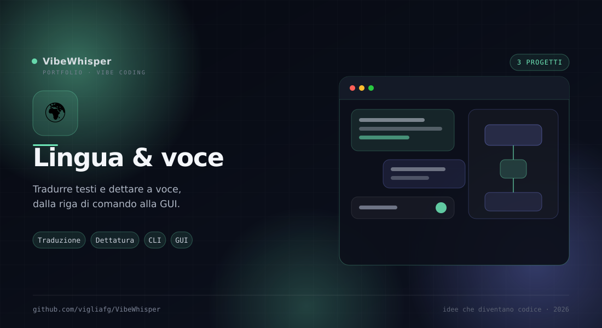

🌍
Lingua & voce
Traduzione di documenti e dettatura vocale: strumenti per lavorare sulla lingua scritta e parlata, dalla riga di comando alla GUI.
3
Progetti
3
Motori di traduzione
1
Dettatura locale
0
Account
Sezione 03 · Lingua
Scrivere, tradurre, dettare
Tre progetti che trattano la lingua in modo diverso: mdtranslator preserva la struttura del Markdown, cli_translator traduce interi EPUB, NovoDictate porta la voce in testo con correzione grammaticale.
Come sono collegati
Fili comuni
Due sono traduttori, uno è dettatura. Tutti evitano di stravolgere il testo di partenza.
- mdtranslator — Lavora sul Markdown e mantiene tabelle, heading e code block.
- cli_translator — Lavora sull'EPUB e preserva capitoli, TOC e formattazione.
- NovoDictate — Lavora sull'audio: trascrive in italiano e corregge la grammatica.